left-hand-controller
マウスと一緒に使う、左手用のゲーム入力デバイスを自作する計画。Apexでバッテリーを巻きながら左右に避けても、ダッシュで回復がキャンセルされない操作を目指す。
試作5号(proto_v5.stl)を黒で刷って握る
握る部分を細くし、天面を親指の付け根の向きを中心にした扇形にした版。5号で天面の傾きを25°に強め、薬指用のボタンを足し、床ボタンを土台の右後ろへ移した。握って、Mouserpadと比べた感想を教えてください。
- 試作は黒の PLA Basic か PETG Basic で十分(白は完成版用に取っておく)。サポートは「自動」
- 中は詰まった形なので、インフィル(中の詰め具合)は 10% に下げると早く刷れる
- 刷る前にプレートを洗剤で洗って、スティックのりを薄く塗る
- 見てほしいところ:太さ、天面の傾き、親指が扇形のボタンに届くか、人差し指・中指が前面のボタンに届くか、薬指が G に届くか、天面の傾きがきつすぎないか
進み具合
いまは2. 外形づくりの最初。プリンターのセットアップと初印刷(眼鏡スタンド)は完了し、試作用の白いマットPETGも手元にある。
最近終わったこと
- A1 mini 到着・セットアップ・キャリブレーション
- 初印刷:眼鏡スタンド(1.4時間、成功)
- 白マットPETG(TINMORRY)を購入して登録
- Mouserpad v2 を撮影して、寸法と扇形の配置を試作に反映
このあと
- ホールセンサーのスティックをAmazonで注文する
- 握った感想をもとに次の版を作る
全体は6段階。「Claude」と書いた作業は、写真や感想をもらえればこちらでやります。
準備
完了- プリンター購入(A1 mini、周年セール ¥26,000)
- 開梱、固定具外し、自動キャリブレーション
- フィラメント装填、初印刷(眼鏡スタンド)
外形づくり
いまここ- 既製品の写真を送る
- 試作の寸法を、好みの製品に寄せる Claude
- PCに Bambu Studio を入れて、試作を白マットPETGで刷る(数時間。寝る前に流すと楽)
- 握って感想を伝える(「もっと太く」「親指が届かない」など、言葉でOK)
- 感想を数字に直して次の版を作る Claude → 3〜5を、しっくりくるまで繰り返す
何度作り直しても合わないときは、手の撮影ガイド(リポジトリの docs/photo-guide.md)で手の寸法から作り直す。
電子部品
これから- 部品を注文(2と並行して進められる)
- Pico に CircuitPython を入れる(10分)
- ブレッドボードにスティックとボタン数個を仮組み
- ファームウェアを書き込んで、スティックの実測値に合わせる Claudeと一緒に
- メモ帳と Apex の射撃訓練場で入力を確認
組み立て
これから- 確定した外形の中に、基板の置き場・底蓋・USB-Cの口を設計 Claude
- 本体・底蓋・ボタンを別々に印刷
- スイッチとスティックをはんだ付けして組み込む
実戦
これから- Apex で使いながら、デッドゾーン・ダッシュの発動条件・キー割り当てを調整
- ゴール:バッテリーを巻きながらレレレしても、回復がキャンセルされないこと
販売
気が向いたら- 完成品の写真とデモ動画をSNSに出して反応を見る
- 反応があれば販売版を設計し、BOOTH で小ロット販売

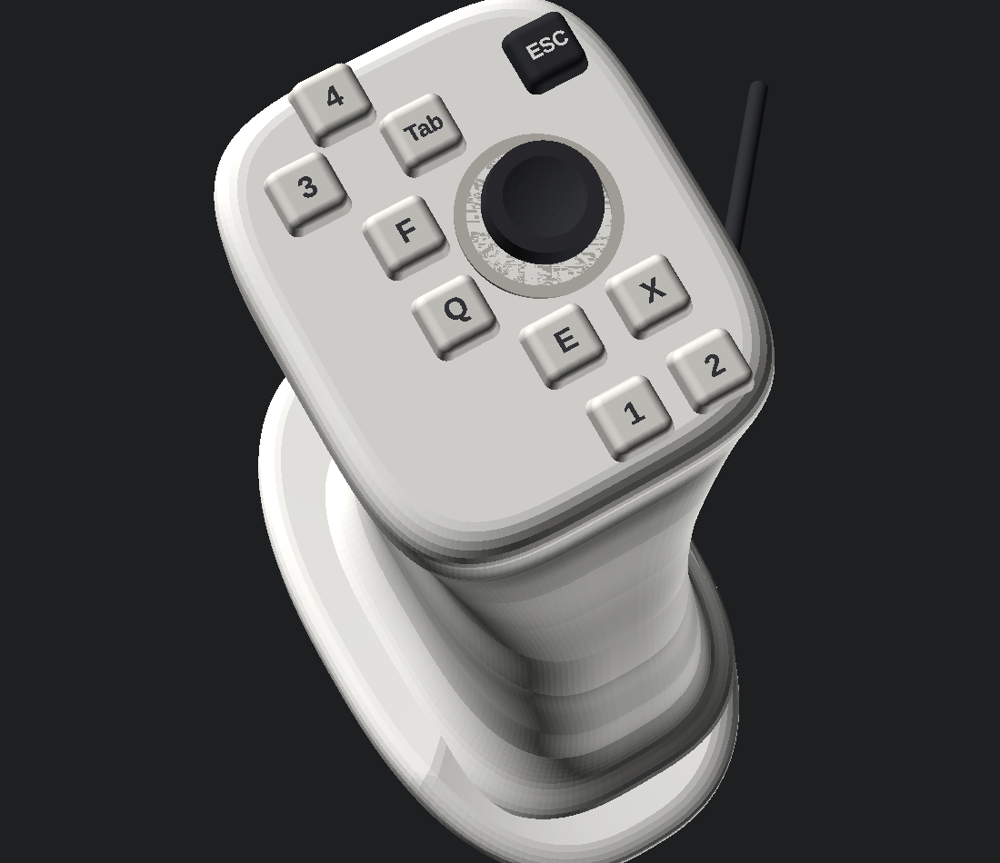
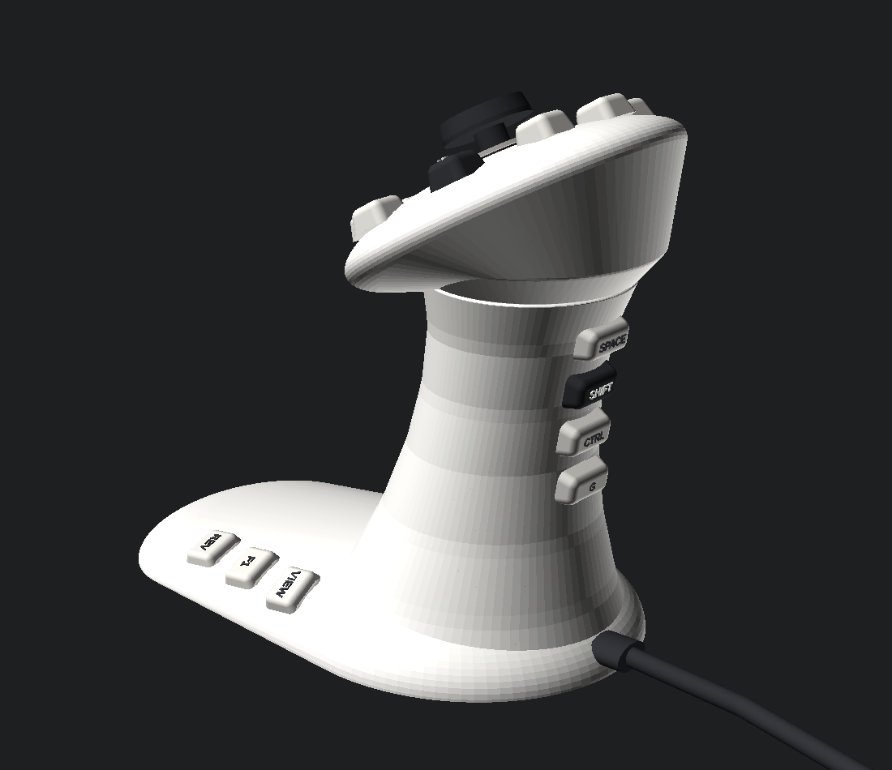
大きさと比率は Mouserpad v2(90×125×120mm)の写真から取った。形そのものはまねていない。試作の感想で調整する。
ボタン配置
| 場所 | 押す指 | ボタン | ピン |
|---|---|---|---|
| 天面の中央 | 親指 | スティック → WASD(8方向)、押し込み C | GP26 / GP27 / GP11 |
| 天面の周り | 親指 | 1 2 3 4 Q E X F Tab ESC(0.3秒長押しで送る。かすっても誤爆しない) | GP2〜GP10, GP16 |
| 前面(モニター側) | 人差し指・中指 / 薬指 | 上から SPACE SHIFT CTRL(人差し指・中指)、少し離して G(薬指)。小指は下のくぼみに巻き付けて安定させる | GP13 / GP15 / GP14 / GP12 |
| 土台の右後ろ(手前側) | 手を少しずらして押す | REV デスボ蘇生(L) F1 Fnなしで直接 VIEW 武器を眺める(N) | GP17 / GP18 / GP19 |
2つの操作モード
apex(はじめの設定)
スティックを倒してもダッシュは乗らない。ダッシュは SHIFT ボタンだけ。回復中にどの方向へ倒してもキャンセルされない。
auto-dash
スティックを92%以上倒すとダッシュ。ただし回復キー(4)を押してから7秒間はダッシュしない。
Tab とスティック押し込みを1.5秒長押しで切り替え。選んだモードは本体に保存される。
買ったもの
| 品名 | 値段 | 状態 |
|---|---|---|
| Bambu Lab A1 mini | ¥26,000 | 使用中 |
| Bambu PLA ベーシック 黒(スプール付き) | ¥2,210 | 使用中 |
| Bambu PETG ベーシック 黒(スプール付き) | ¥1,885 | 手元 |
| 予備ホットエンド 0.4mm ステンレス | ¥1,403 | 手元 |
| 3P→2P 変換アダプター | ― | 使用中 |
| TINMORRY マットPETG 白 | ¥2,099 | 手元 |
| Raspberry Pi Pico H(秋月) | ¥920 | 手元 |
| ブレッドボード+ジャンパーワイヤーセット EIC-102J(秋月) | ¥1,280 | 手元 |
| 耐熱電子ワイヤ イラックス AWG28 1m×10色(秋月) | ― | 手元 |
| タクトスイッチ 6mm 黒 TVDT18-050CB-T(10個入り、秋月) | ¥120/パック | 手元 |
| ジャンパーワイヤー オス-オス 15cm 赤 10本(秋月) | ¥580 | 手元 |
次に買うもの:電子部品
秋月で買うものはすべて買い済み。残りはこれだけ。タクトスイッチは完成版で18個使うので、手元が1パック(10個)なら組み立て前にもう1パック足す。
| 品名 | 数 | 目安 | どこで | 選び方 |
|---|---|---|---|---|
| ホールセンサー式スティック | 2 | ¥1,000〜2,000 | Amazon | 「Hall Effect」と明記、PS4用。1個は予備 |
| microUSBケーブル | 1 | 〜¥500 | どこでも | データ通信対応(充電専用は不可)。家にあれば不要 |
工具(持っていなければ)
| 品名 | 目安 | メモ |
|---|---|---|
| はんだごて(温調式。HAKKO FX-600 など) | ¥2,000〜4,000 | Amazon は偽物に注意。販売元を確認 |
| はんだ 0.8mm・こて台 | 〜¥1,500 | こて台は安全のため必須 |
| ニッパー・ワイヤーストリッパー | 〜¥1,000 | ストリッパーは「AWG28(0.08sq)対応」を選ぶ。細い線用でないと中の線ごと切れる |
| テスター | 〜¥2,000 | 配線ミスを探すのに使う |
| デジタルノギス | ¥1,500〜2,500 | 部品の寸法を測る |
収納
| 品名 | 目安 | メモ |
|---|---|---|
| トランク型工具箱(TRUSCO T-350 など) | ¥2,000〜3,000 | 工具とパーツケースが全部入るサイズ |
| 仕切りを動かせるパーツケース | 2個 | 電子部品用とネジ用 |
| 耐熱シリコン作業マット | ¥1,000〜1,500 | はんだ付け用 |
| 密閉容器+シリカゲル+湿度計 | ¥1,500〜3,000 | 開けたフィラメントの保管用 |
あとで(組み立ての段階)
| 品名 | メモ |
|---|---|
| M3 ヒートインサート・M3×8 皿ネジ | 底蓋の固定用 |
| パネルマウント USB-C 延長ケーブル | コネクタを本体に固定して壊れにくくする |
| TINMORRY マットPETG 黒(任意) | 黒いパーツのツヤを白とそろえたいとき |
手持ちと使い道
| フィラメント | プリンターでの設定 | 使い道 |
|---|---|---|
| TINMORRY マットPETG 白 | Generic → PETG | コントローラーの完成版 |
| Bambu PETG ベーシック 黒 | Bambu Lab → PETG Basic | コントローラーの試作、スティックの頭・ESC・SHIFT |
| Bambu PLA ベーシック 黒 | Bambu Lab → PLA Basic | コントローラーの試作、動く部品のあるモデル(フィジェットなど)、小物 |
買うときのルール
太さは 1.75mm
2.85mm という太いものもあるので注意。メーカーはどこでもよい。プリンターの一覧にないメーカーは「Generic」を選ぶ。
名前にこれが入っていたら買わない
CF(カーボン繊維)、GF(ガラス繊維)、蓄光、金属入り。ノズルの中を削って傷める。使うには焼入れ鋼のノズルが必要。
最初の1本はスプール付き
リフィル(スプールなし)は、空になったスプールに付け替える2本目以降用。
入れ方・抜き方
入れる
- 先を斜めに切って、まっすぐに伸ばす
- スプール側のチューブの入口から、止まるまで押し込む
- 画面の「フィラメント」→ Ext →「ロード」
- 種類を選ぶ(上の表の設定)
抜く
- 画面の「フィラメント」→ Ext →「アンロード」
- 温まって中で切られるまで待つ(2〜3分)
- スプール側からゆっくり引き抜く
- 先をスプールの縁の穴に差して留める
冷えたまま手で引っ張らないこと。
抜いたスプールは、シリカゲルと一緒に袋に入れて口を閉じる。PETGは特に湿気に弱い。
印刷物のはがし方
- プレートが冷たくなるまで待つ(10〜20分)
- プレートの手前を持ち上げて、プリンターから外す
- 両手で端を持って軽く反らせる。印刷物が浮いてくる
- 取れなければプラスチックのヘラを差し込む(金属は傷が付くので使わない)
指でこじらない。PETGはくっつきやすいので、刷る前にスティックのりを薄く塗っておく(印刷後は水で洗う)。
市販品(Mouserpad v2)を自分で使ってみた不満と、Amazonレビューの不満から決めた仕様。Mouserpad v2 の外寸は 90×125×120mm(幅×奥行き×高さ)。
| 決めたこと | 理由 |
|---|---|
| ダッシュをスティックから切り離す | 市販品は前に倒すと勝手にダッシュが乗り、レレレや前進でバッテの回復がキャンセルされる |
| ESC ボタンを付ける | 市販品で一番多い不満。ゲーム中にキーボードへ手を伸ばすことになる |
| キーを自由に割り当てられる | 市販品は固定で変えられない |
| 土台に3ボタン(デスボ蘇生・F1・武器眺め) | キーボードで押しているキーを減らす。撃ち合い中に押さないので、握っている手が触れない土台の右後ろに置き、手を少しずらして押す。くぼみの床に置くと薬指の背がこすれるため移した |
| 天面のボタンは親指を中心に扇形 | Mouserpadで自分が一番気に入っているところ。痛くなるところもないので、全体の大きさもMouserpadに寄せる(形はまねず、寸法の比率だけ参考にする) |
| 前面の下に薬指用のボタン | 3つのボタンは人差し指と中指で足りていて、薬指が空いている。小指は巻き付けて握りを安定させる役にする |
| グリップは下を太く、上を細く | 市販品は小指と薬指が窮屈で、握り込んで手首が痛くなるという声 |
| 手首側が低い傾斜の土台 | 机の縁で手が浮いて、掌の小指側に荷重が集中する問題への対策 |
| USB-C を本体に固定して出す | 市販品はコネクタを面一に付けたせいで、3か月半で壊れたという報告 |
| 有線だけにする | 無線にすると技適が必要。有線のUSB給電なら電気用品安全法(PSE)の対象外 |
| ファームウェアは自作 | 販売するときにライセンスで困らないように |
| 形はオリジナル | 市販品の形をまねて売ると、不正競争防止法に触れるおそれ |
| 専用ソフトなしで割当を変えられる | 市販品はゲーム内設定を大きく変えるしかなく、キーボードに戻すと混乱する。一方で「インストール不要」も評価されているので、PCに挿すと出てくる設定ファイルを書き換える方式にする |
| ケーブルを取り外せる | 市販品はケーブルが短く、取り外せないという声。USB-Cの口なら好きな長さに替えられる |
| 手の大きさに合わせられる | 市販品はサイズ調整ができない。形を数字で管理しているので、売るときはS/M/Lを出せる |
| 起動ごとにスティックの中心を測り直す | ホールセンサーでも、使ううちに中心がずれることがある |
これまでのやり方の問題
試作2〜5号は、Mouserpad v2 の写真を目で見て数字を見積もっただけで作っていた。写真の上に点を打って測ってはおらず、都合のよい数字だけを使っていた。2026-11-22 に撮り直してもらった写真で、下のとおり測り直した。写真と、点を打った図はリポジトリの reference/ に保存してある。
測り方
- 横の形: テーブルの高さから真横に撮った IMG_1096 に、輪郭の点を打った(下の左の図の黄色い点)。縮尺は、本体の高さ 120mm(商品ページ)を、床から天面の一番高い角までの長さに合わせて決めた。この縮尺で測った奥行きは 125.3mm で、商品ページの 125mm と合う。
- 天面の形とボタン: 真上から撮った IMG_1092 に、天面の外形・キー・スティックの点を打った(下の右の図)。縮尺は、横の写真で測った天面の前後の長さ(80.8mm)に合わせた。スティックの頭の直径がこの縮尺で約19mm になり、市販品(約20mm)と合う。天面は傾いているので、前後方向の距離は 1/cos29° 倍した。
- 使わなかった写真: 本体を A4 の上に寝かせた IMG_1090・1091 は、本体の厚み(約90mm)に対してカメラが近く、遠近で大きく写るので寸法には使っていない。
- 向き: 3つのボタンの面を「前」とすると、天面はその前の側が一番高く、土台は反対側(手前)へ伸びて先が薄くなる。真上の写真で、天面のボタンは手のひら側(使う人から見て左)に並び、スティックは指先側に寄っている。試作2号以降の向き(前=モニター側、手のひら=左)と食い違いはない。
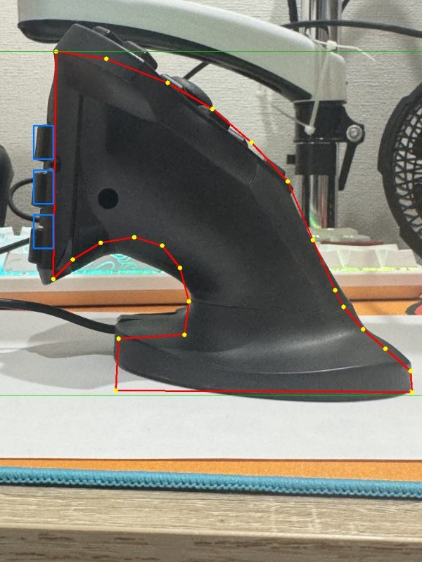
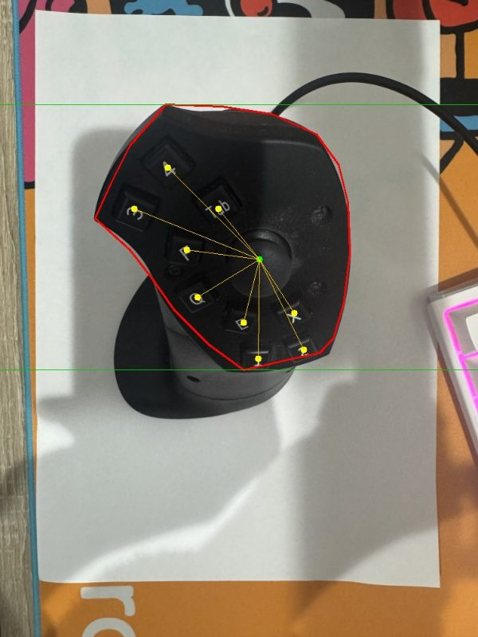
既製品と試作5号の比べ
| 部位 | 既製品(測った値) | 試作5号 | 差 |
|---|---|---|---|
| 天面の傾き | 約29°(前が高い) | 25°(2〜4号は9°) | やや緩い |
| 天面の大きさ | 前後 81mm(斜めに沿って 93mm)、幅 約78mm | 前後 約93mm、幅 約80mm | 前後がやや長い |
| 天面の高さ | 前の角 120mm、後ろの端 75mm | 前 約131mm、後ろ 約92mm | 全体に高い |
| 前面(3つのボタンの面) | 高さ 40〜120mm の板で、その下は空いている。空きは前面から 46mm 奥まで、高さ 21〜55mm | 前面が床近くまで続き、下に浅いくぼみ(高さ 18〜32mm)があるだけ | 形が違う |
| 3つのボタン | 高さ 51〜63 / 67〜79 / 82〜94mm | 44 / 62 / 76 / 90mm(薬指用を足して4つ) | 一番下が低い |
| 胴体の後ろ(手首側) | 垂直から約24°、手首側へ倒れる | 細い首で、ほぼ垂直 | 形が違う |
| 土台 | 前面から 22mm 奥から始まり、手首側へ 125mm の所まで。厚み 前 18mm → 先 7mm | 前面より前(モニター側)まで張り出す。厚み 12mm | 伸びる向きが逆 |
| 天面のボタン(内側の列) | Tab F Q E X、スティックから 21.5〜23mm、45°前後おき、扇の真ん中は約122° | 22.3mm、45°おき、真ん中 115° | ほぼ合っている |
| 天面のボタン(外側の列) | 4 と 3 は 約42mm、1 と 2 は 約34.5mm | どれも 37.5mm | 前と後ろで違う |
横の輪郭を重ねた図
赤が既製品(IMG_1096 から測ったもの)、灰色の点線が試作5号。前面の位置をそろえて、同じ縮尺(1マス 10mm)で重ねた。
まだ測れていないこと
- 左右方向の形(手のひらを当てる面と指先側のへこみの深さ、土台の手を置く所のへこみ)。真正面・真後ろから、テーブルの高さで撮った写真があれば測れる
- 天面の幅 78mm は、縮尺の決め方の都合で ±8mm 程度ずれている可能性がある
試作6号:測った値から作り直した形
天面の傾きは 29°(既製品と同じ)と 35° の2種類。外形は hardware/body2.scad、印刷用は hardware/stl/proto_v6_29deg.stl と proto_v6_35deg.stl。
| 部位 | 何を使ったか |
|---|---|
| 横から見た輪郭 | IMG_1096 で打った点をそのまま使った。35° の版は、天面の線だけを前の角を軸に傾け直した |
| 天面の外形 | IMG_1092 で打った点を、測った CSV から自動で読み込んだ(手で数字を写していない) |
| 天面のキーの位置 | 同じく IMG_1092 で測った位置 |
| 前面の3つのボタン | IMG_1096 で測った高さ(中心 57・73・88mm) |
| 首の太さ・土台の張り出し | IMG_1092 から遠近を補正して見積もった値(首の幅 約44mm)。土台の手のひら側の端は、写真からの見積もり(約70mm)だと全体の幅が 98mm になり商品ページの 90mm を超えたため、90mm になる位置(スティックから 62mm)にした |
| まだ入れていないもの | 土台の手を置く所のへこみ・手のひら側のへこみ(左右の形が測れていない)、薬指のボタン、床ボタン、USB-C。ESC は仮の位置 |
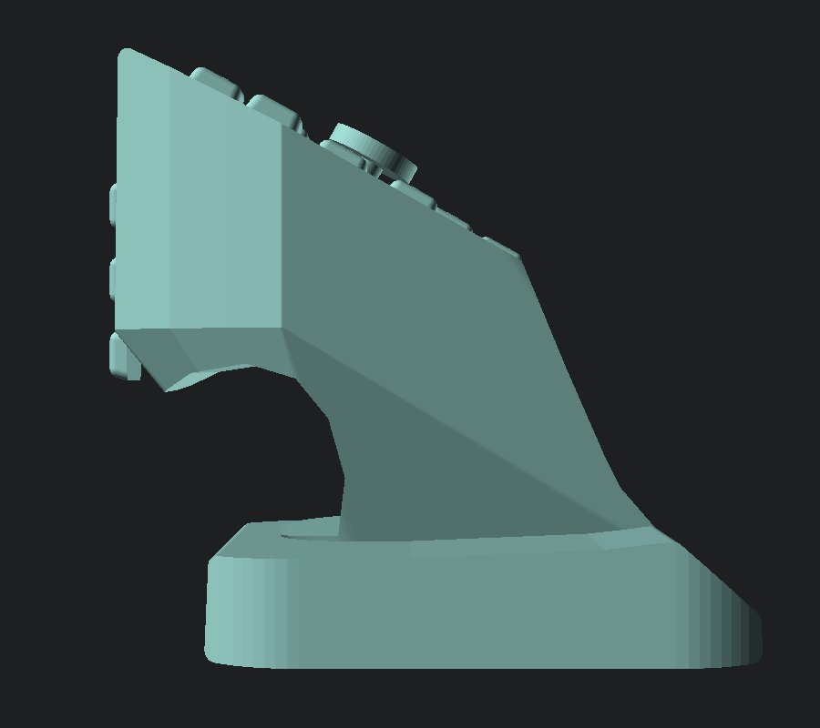
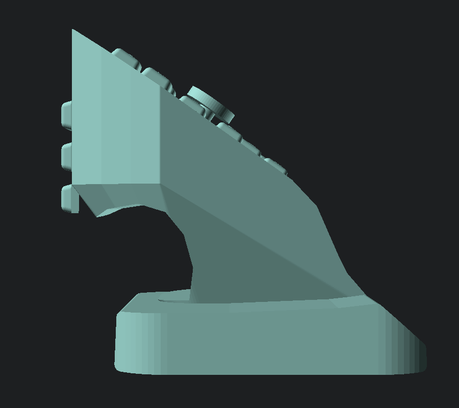
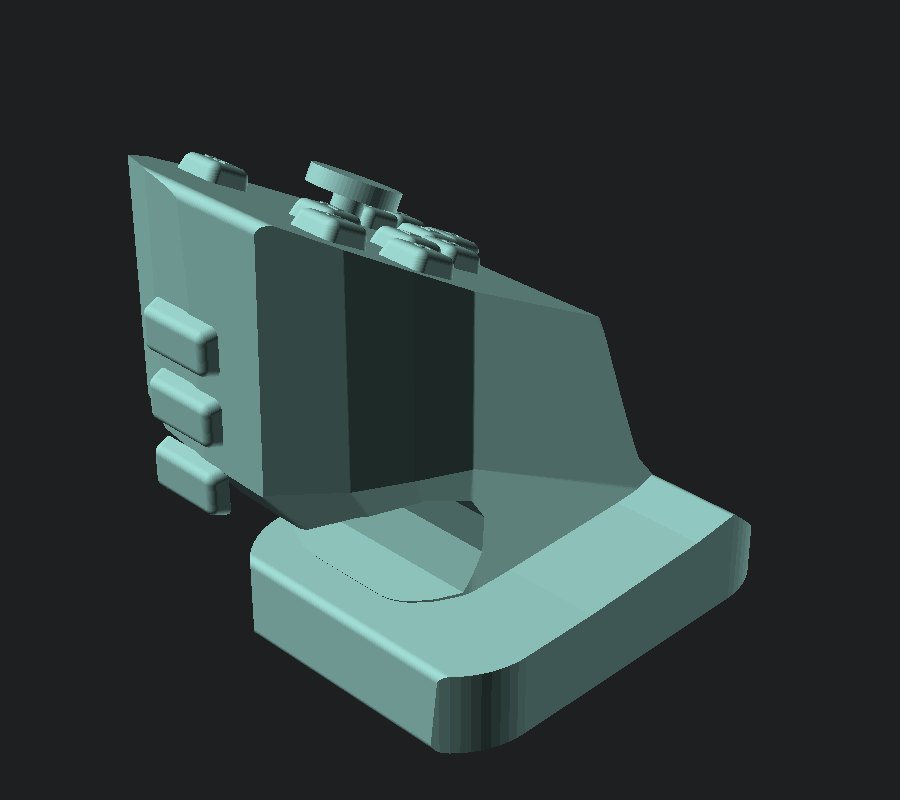
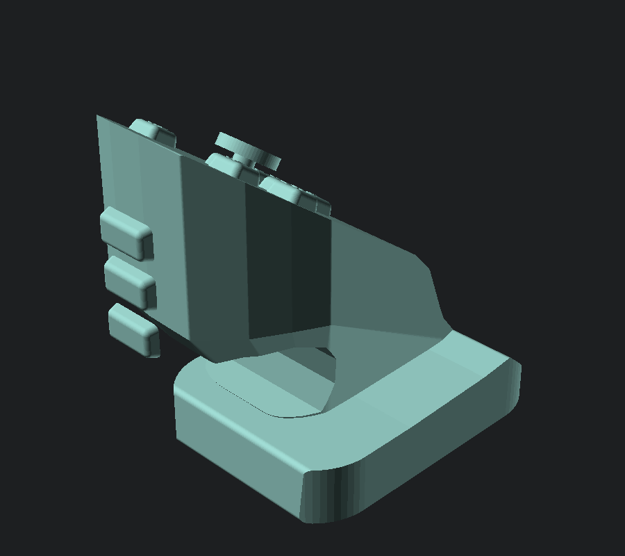
試作6号(29°)を刷って既製品と並べた結果
2026-11-23 に 29° の版を刷った(黒の PLA Basic、ライトニング 10%、ツリーサポート、約70g・2時間48分)。全体の輪郭・角度・キーの位置は近いが、次の4つがずれている。写真は reference/proto_v6_compare/ に保存した。
| # | ずれ | 見える写真 | 原因 |
|---|---|---|---|
| A | 土台が厚い。既製品は縁が薄い板で、首の付け根の周りだけが盛り上がる。試作は前から後ろまで約20mmの平らな板 | 手のひら側の低い位置から | IMG_1096 で首の付け根の盛り上がりの高さを「土台の上面」として測り、全体に伸ばした。土台のアップ(IMG_1097)を寸法に使っていなかった |
| B | 頭の下の胴体が太い。既製品は天面の下で左右からくびれて首になる。試作は天面の幅のまま下へ落ち、頭の側面に段ができている | 真上・正面・指側 | 天面の外形をまっすぐ下へ伸ばした立体を使っているため。左右の断面はまだ測っていない |
| C | 天面の縁がカクカク。既製品は 3・F・Q の側の縁が内側にえぐれた曲線 | 真上 | 天面の外形の点が少なく、直線でつないでいる |
| D | 正面の上の縁。既製品は正面から見ると上の縁が少し凹んだ鞍の形。試作は平ら | 正面 | 横と上の写真だけでは分からない形 |
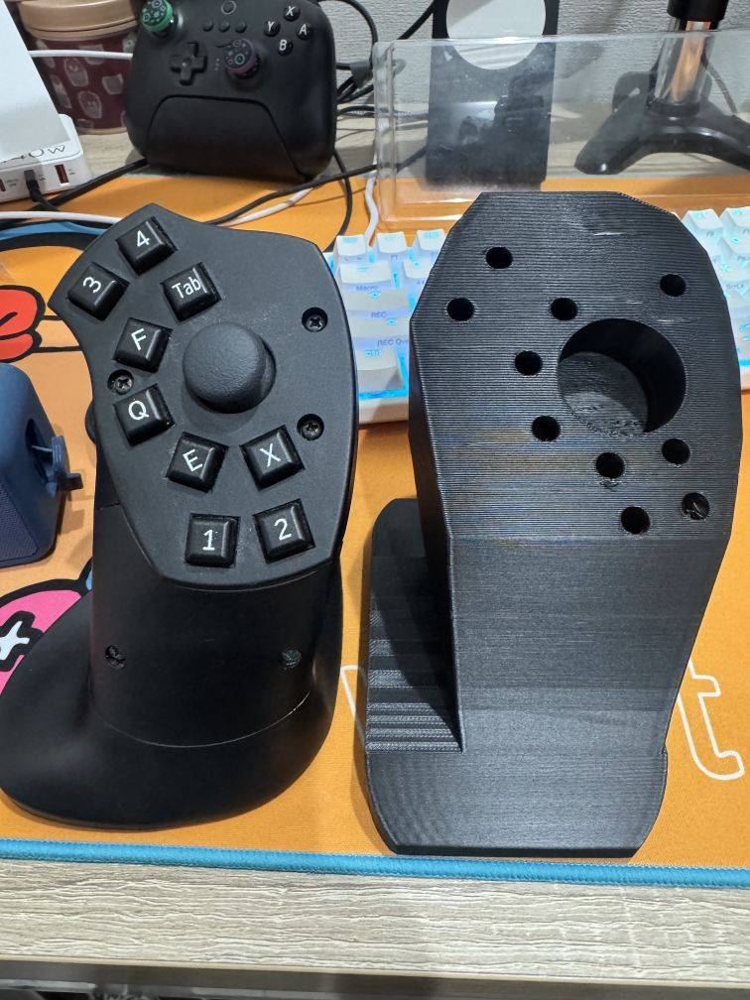
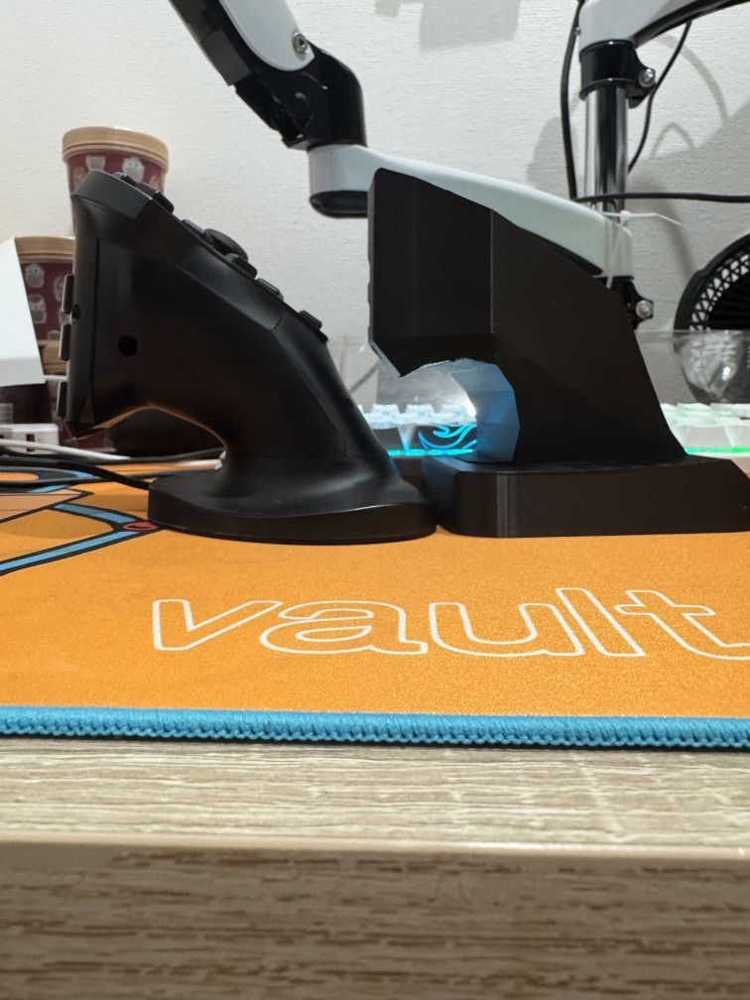
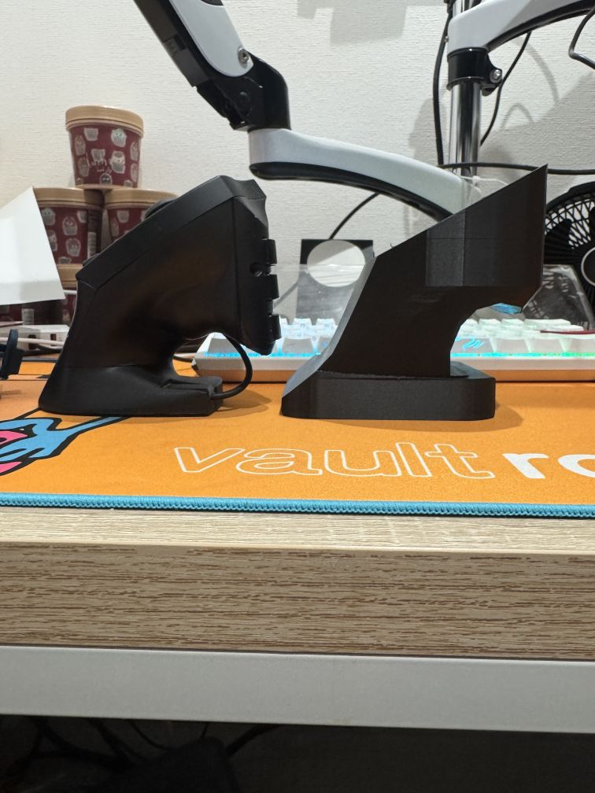
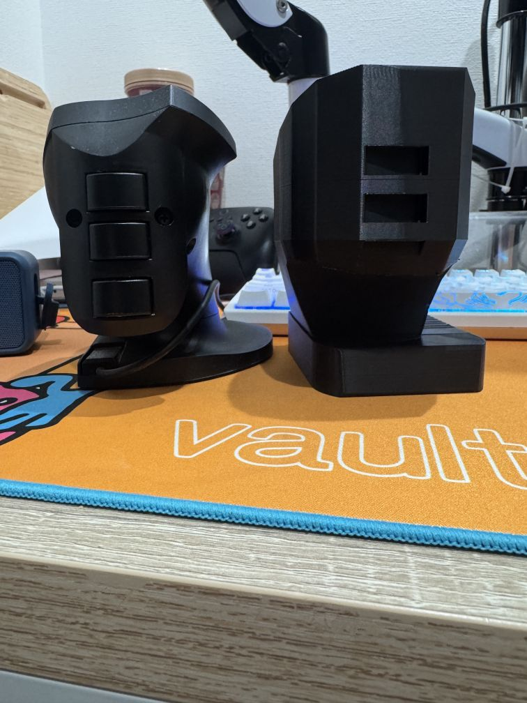
定規で測ってほしい所(土台)
土台は場所によって厚さが違うので、下の写真の赤い線の位置で測る。どれも、定規を机に垂直に立てて、机の面から線の上の端までの高さを読む。底のゴムも含めてよい。
- 前は3つのボタンがある面の側、手首側はその反対の端。
- 黄色の点線は、本体と土台の継ぎ目(細い溝)。
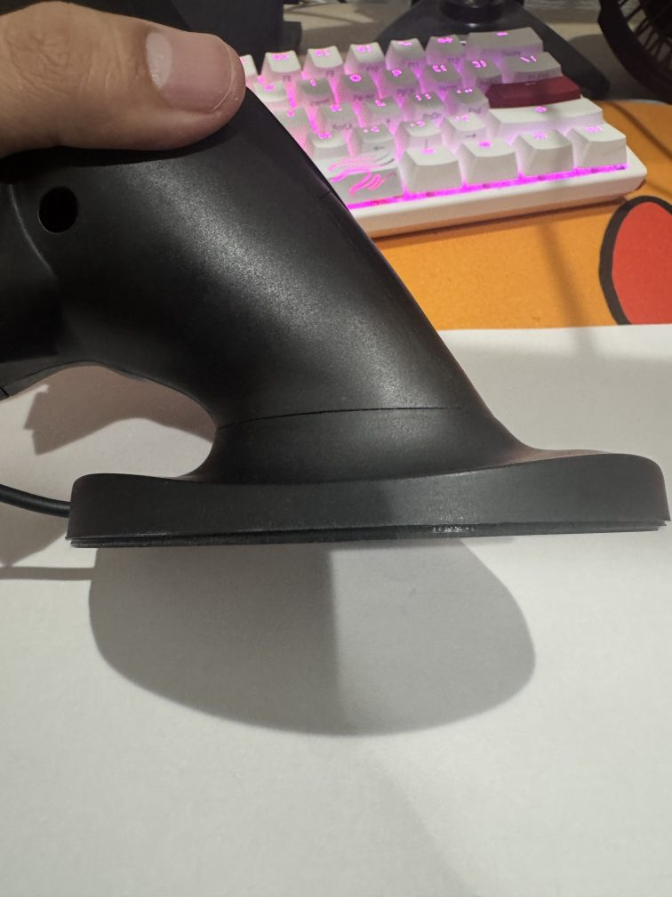
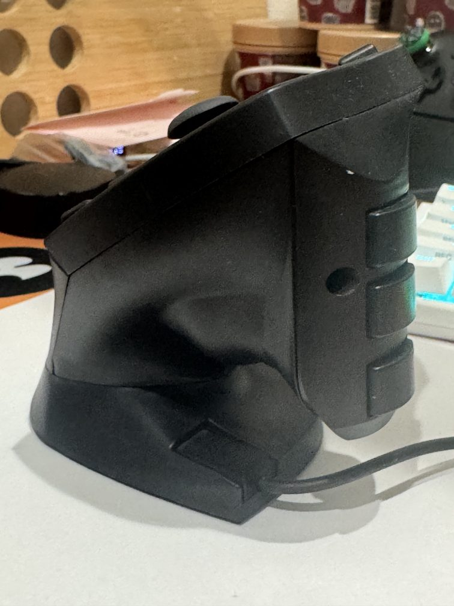
| # | 場所 | 測った値 |
|---|---|---|
| 1 | 土台の前の端の縁 | まだ |
| 2 | 土台の手首側の先の縁 | まだ |
| 3 | 継ぎ目の高さ(手のひら側) | まだ |
| 4 | 継ぎ目の高さ(指側) | まだ |
次にやること
- 上の 1〜4 を定規で測り、土台を作り直す(ずれ A)
- 真正面・真後ろの写真で左右方向の形を測り、首のくびれと天面の縁の曲線を入れる(ずれ B・C・D)
- 握った感想(29° の角度、指が頭の下に入るか)を聞いて、35° を刷るかを決める
- そのうえで、変える部分(薬指のボタン、床ボタン、USB-C)を足す
プリンター
- スプール
- フィラメントが巻いてあるリール
- リフィル
- スプールなしのフィラメント。空いたスプールに付け替えて使う
- チューブ
- スプールからツールヘッドまでフィラメントを通す白いパイプ
- ツールヘッド
- ノズルが付いて左右に動く箱。上の4つの穴にチューブを挿す
- ノズル / ホットエンド
- フィラメントを溶かして押し出す先端。予備を1本持っている
- ビルドプレート
- 印刷物を作る金色の板。磁石で付いていて、外して曲げると印刷物が取れる
- パージワイパー
- 試し出しのプラスチックを受け止めて、ノズルの先を掃除する部品
- キャリブレーション
- 台の傾きや振動を測る自動調整
- AMS lite
- 4色を自動で切り替える別売りユニット。今は不要
素材
- PLA
- 一番刷りやすい素材。熱に弱く、夏の車内などで変形する
- PETG
- 丈夫で熱に強い。完成版向き
- マット
- ツヤ消し。積層の筋や指紋が目立ちにくい
- CF / GF
- カーボン繊維 / ガラス繊維入り。ノズルを削るので使わない
ソフト・データ
- Bambu Handy
- スマホのアプリ。印刷の開始や進み具合の確認
- Bambu Studio
- PCのソフト。自分のデータを刷るときに使う(スライサー)
- MakerWorld
- 他の人が作ったモデルを探して刷れるサイト
- STL
- 3Dの形のデータ。試作は proto_v5.stl
電子部品
- Raspberry Pi Pico
- コントローラーの頭脳。PCにはキーボードとして見える
- ファームウェア
- Pico に入れるプログラム。スティックやボタンをキー入力に変える
- ホールセンサー
- 磁石で位置を読むスティック。削れないのでドリフトしにくい
- タクトスイッチ
- 押すとカチッと鳴る小さなボタン
- ブレッドボード
- はんだ付けせずに部品を挿して試せる板
- デッドゾーン
- スティックを少し倒しただけでは反応しない範囲
最終更新 2026-11-22(試作5号)。データと設計ファイルはリポジトリの claude/3d-printer-controller-fglar7 ブランチにある。